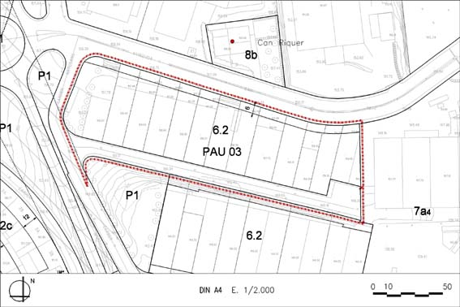

PAU 03 “Forja” (Polígon d’actuació urbanística PAU – 03)

Objectiu: Obtenir terrenys destinats a vialitat (carrer Forja, que actualment dóna accés a les finques privades i encara resta amb titularitat privada).
Règim del sòl: Sòl Urbà No Consolidat
| Superfície del polígon: Ordenació Sistemes urbanístics de cessió: Viari (V) Zones edificables: Industrial entre mitgeres, fora del Pol. Ind. Llobregat (clau 6.2) |
13.806 m2s 2.749 m2s 11.057 m2s |
(St) Sostre total |
(Segons normes urbanístiques) |